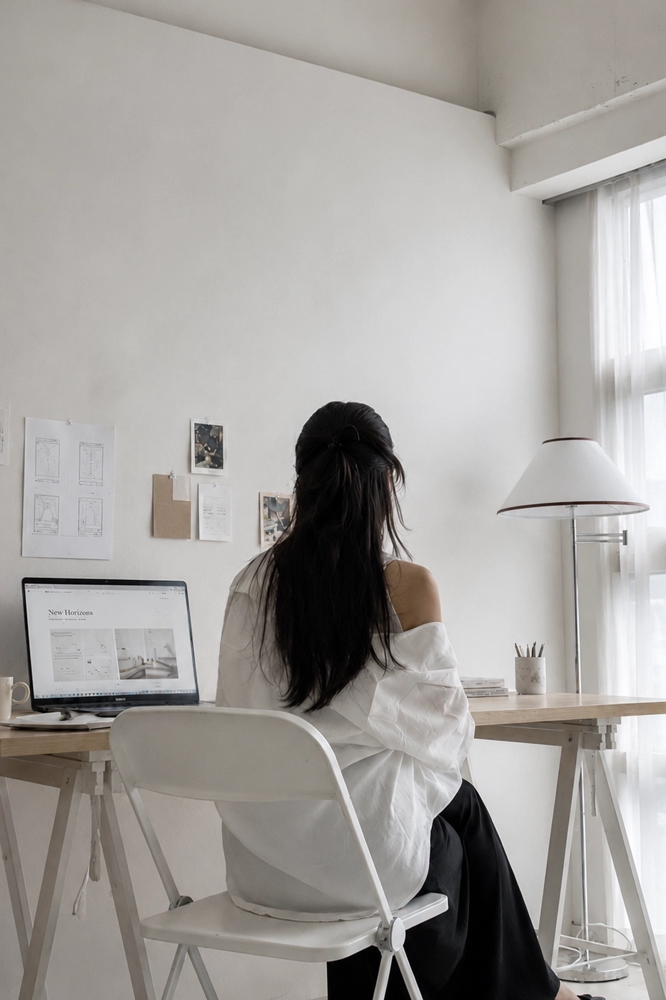

Small studio.
Close attention.
페이지 아뜰리에는 각 브랜드의 문장과 이미지, 여백을 세밀하게 조율합니다. 기획자와 디자이너, 개발자가 따로 움직일 때 생기는 간극 없이 처음부터 끝까지 일관된 결과를 만듭니다.
Based inSeoul, South Korea
Working withF&B · Lifestyle · Professional
SpecialtyBrand website · Editorial UI
AvailableKorean · English websites